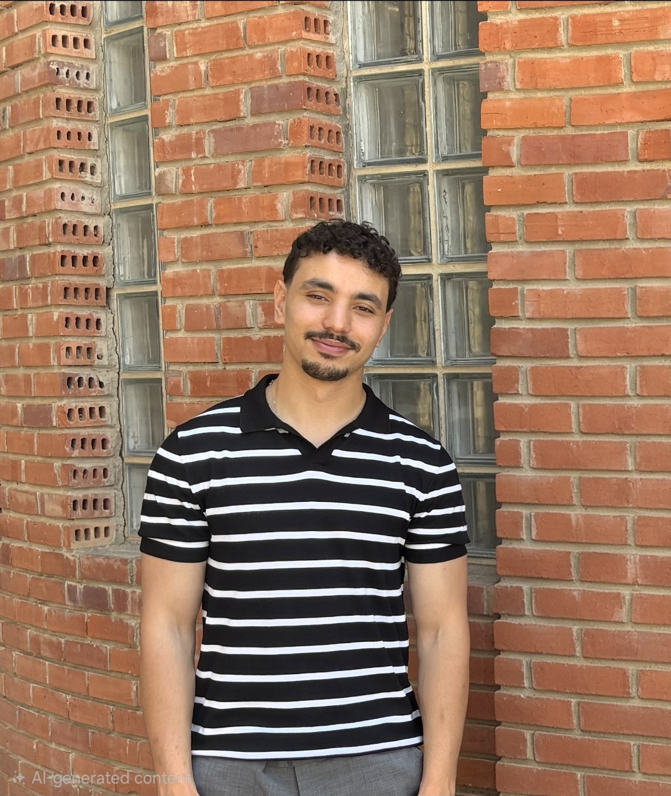

Élève ingénieur en dernière année à l'INSAT (Informatique Industrielle et Automatique, option Ingénierie des Systèmes Industriels), avec une expérience en industrialisation et qualité en production électronique (EMS) pour le groupe Bosch.
Formé à l'INSAT en Informatique Industrielle et Automatique, option Ingénierie des Systèmes Industriels (équivalent Génie Industriel), j'ai construit un profil d'ingénieur industriel orienté industrialisation et qualité, avec un socle en automatisme et en données qui me permet de comprendre à la fois le process, la machine et l'information.
Pendant mon stage chez Asteelflash (site de La Soukra, clients du groupe Bosch), j'ai mis à jour la documentation d'industrialisation d'une ligne (flowchart, layout, chronométrage et Takt Time, étude capacitaire), mené des études MSA et Cm/Cmk sur 5 lignes, contribué à l'AMDEC et aux livrables PPAP d'un produit, suivi un prototype client jusqu'au rapport d'anomalie transmis au client, et conçu un outil VBA de capabilité aujourd'hui utilisé par le site. J'approfondis l'amélioration continue avec une formation Lean Six Sigma Green Belt et la gestion de projet avec une préparation PMP, après avoir piloté un événement national de 50 personnes et 80 000 DT de budget.
Les familles de postes où mon expérience s'applique directement — du terrain qualité à l'analyse de données industrielles.
Stagiaire Ingénieur Industrialisation & Qualité
Asteelflash Tunisie — La Soukra (EMS, clients du groupe Bosch)
Stagiaire Business Développement
ELCO Solutions
Stagiaire Développement de Tests
Asteelflash Tunisie
Agent de Support Technique
Concentrix
« Ses connaissances en conception, analyse technique et amélioration des processus lui permettent d'aborder efficacement les défis rencontrés dans un environnement industriel. »
« Doté d'un bon esprit d'analyse, il possède des connaissances solides en outils qualité tels que les 5 Why, Ishikawa, PDCA, FMEA ainsi qu'en gestion documentaire et suivi des indicateurs de performance. »
Lettres complètes disponibles sur demande.
Au-delà du terrain industriel, pilotage de projets et d'équipes dans un cadre associatif d'envergure nationale.
Chef de Projet — National Robotics Week 8.0 | IEEE RAS INSAT
Pilotage d'un événement national de référence en robotique, IA et Industrie 4.0, sur 7 jours et avec un budget de 80 000 DT. Management d'une équipe de 50 personnes et coordination de partenaires industriels, institutionnels et internationaux. Supervision de la stratégie, des programmes techniques, des partenariats, des opérations et de l'exécution globale de l'événement.
Responsable Sponsoring — National Robotics Weekend | IEEE RAS INSAT
Gestion d'une équipe de 6 personnes : partenariats, négociation et suivi des engagements.
Projets menés en stage et projets académiques, organisés par domaine. « Projets Complémentaires » = polyvalence technique (robotique, vision), hors cœur de cible. Cliquez sur une carte pour le détail.
Institut National des Sciences Appliquées et de Technologie (INSAT) — Cycle ingénieur
Diplôme d'Ingénieur, Informatique Industrielle et Automatique — option Ingénierie des Systèmes Industriels (équivalent Génie Industriel) : management de la performance industrielle, analyse décisionnelle et management du risque, GPAO, ERP/SAP, recherche opérationnelle — Tunis, Tunisie
INSAT — Cycle préparatoire intégré
Tunis, Tunisie
Formations professionnelles
Lean Six Sigma Green Belt (en formation) · Préparation à la certification PMP
Baccalauréat Sciences Expérimentales
Lycée Kheireddine Ariana, Tunisie — Mention Très Bien (18,21/20)
Disponible pour un stage de fin d'études de 6 mois à partir de février 2027. N'hésitez pas à me contacter directement.